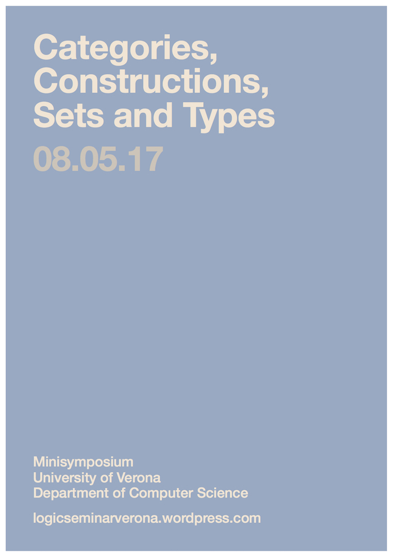

Minisymposium

Categories, Constructions, Sets and Types
8. May 2017
Minisymposium
Department of Computer Science, Sala Riunioni, 2nd floor
Schedule:
09:15 Iosif Petrakis, Univalent types
10:05 Andreas Franz, Type formers for higher inductive types
10:55 Coffee break
11:20 Chuangjie Xu, Extracting computer programs from nonstandard proofs
12:10 Gianluigi Bellin, Proof nets for bi-intuitionistic linear logic
13:00 Lunch break
15:00 Fabio Pasquali, Elementary quotient completion of an elementary doctrine
Iosif Petrakis (LMU Munich)
Univalent types
Bishop’s notion of set is interpreted in Martin-Löf’s type theory as a type A equipped with an equivalence relation R on A such that R(x, y) is a mere proposition, for every x, y : A. We define the notion of a concrete Bishop type as a generalization of a Bishop set, and through it we study the notion of a univalent type, a concept which generalizes the behavior of the universe and the function type in homotopy type theory.
Andreas Franz (LMU Munich)
Type Formers for Higher Inductive Types
With Higher Inductive Types (HITS) the output of a constructor can be a (higher) path, in contrast to standard Types, where constructors always output points. Many HITS are formal representations of objects that appear in algebraic topology and proofs about HITS have therefore often a nice geometric interpretation. As an example, we show that the wedge of two suspended types is equivalent to the wedge of their suspensions and talk about some difficulties that arise when working with more complicated type formers, such as the smash product.
Chuangjie Xu (LMU Munich)
Extracting computer programs from nonstandard proofs
A nonstandard variant of the Dialectica interpretation has been introduced by van den Berg et al. to obtain computational content from proofs in system H, a constructive fragment of Nelson’s Internal Set Theory. We reformulate it in a way that is suitable for a type-theoretic development, and then formalise (parts of) its soundness theorem in the Agda proof assistant to extract Agda programs from nonstandard proofs.
Gianluigi Bellin (University of Verona)
Proof nets for bi-intuitionistic linear logic
Bi-Intuitionistic Linear Logic (BILL) extends intuitionistic linear logic (ILL) with par, dual of tensor, and with subtraction, dual of linear implication. The intended categorical model has two monoidal structures, one closed the other co-closed, connected by linear distributivity and is a conservative extension of Full Intuitionistic Linear Logic (FILL) where subtraction is not present. We survey some forms of proof nets for ILL, FILL and BILL and in particular one in form of natural deduction with correctness criteria.
(Joint work with Willem Heijltjes)
Fabio Pasquali (University of Padova)
Elementary quotient completion of an elementary doctrine
Maietti and Rosolini generalized the notion of exact completion of a weakly lex category to that of elementary quotient completion of a Lawvere’s elementary doctrine, namely a doctrine that validates many sorted conjunctive logic with equality. An important application of the construction is the quotient model used by Maietti to make possible the extraction of programs from constructive proofs in Maietti-Sambin’s Minimalist Foundation. We analyze some properties of this construction and we discuss some relevant applications of it to the theory of triposes and to equilogical spaces.
(Joint work with M. Maietti and G. Rosolini)
Organized by Peter Schuster and Daniel Wessel.